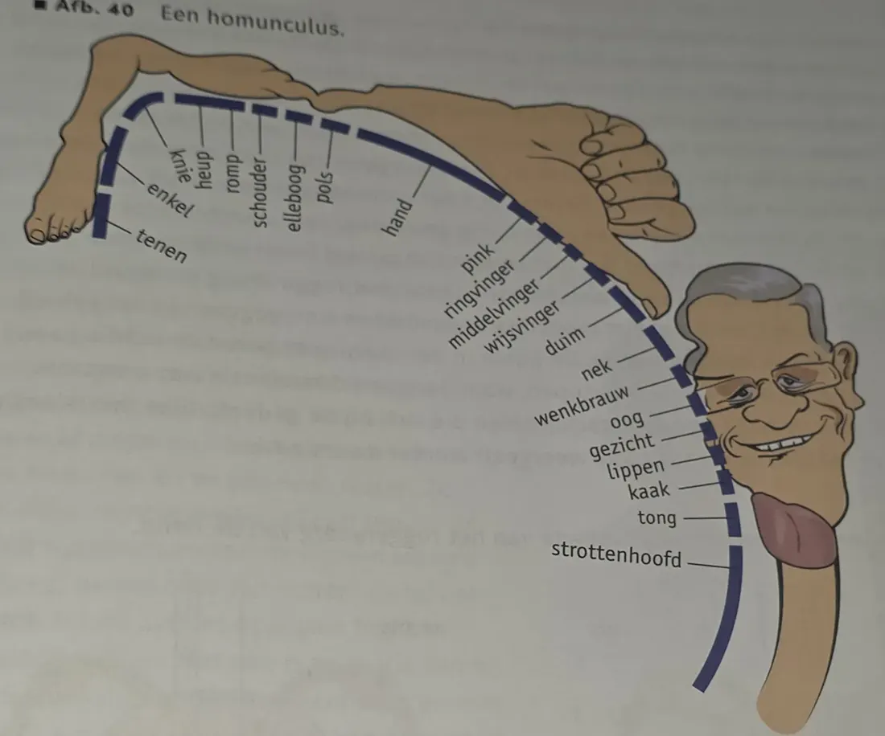
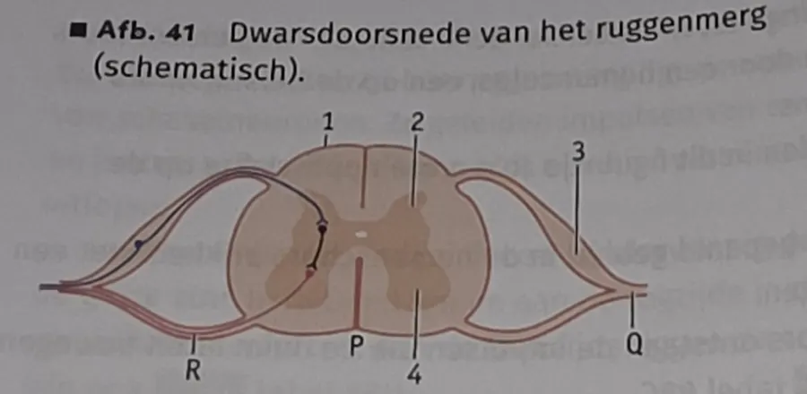
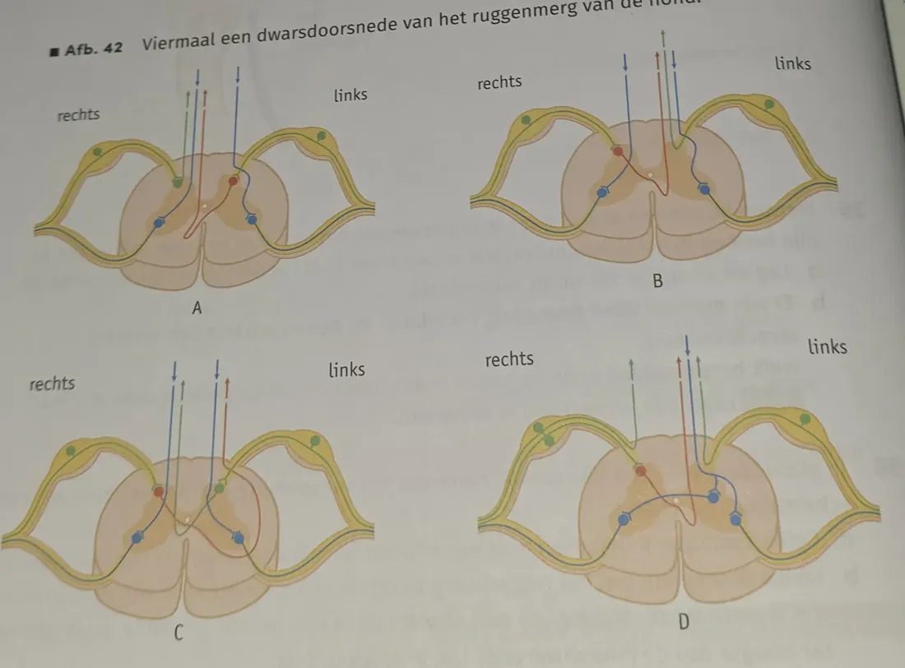

- 7.3.1 Je kunt de bouw en signaalverwerking van de verschillende typen neuronen beschrijven.
- 7.3.2 Je kunt de bouw, functies en werking van de verschillende delen van het zenuwstelsel beschrijven.
Bouw en indeling
- Het zenuwstelsel is een communicatienetwerk dat alle delen van het lichaam verbindt.
- Indeling op bouw:
- centrale zenuwstelsel (CZS): grote hersenen, kleine hersenen, hersenstam en ruggenmerg
- perifere zenuwstelsel: zenuwen die alle lichaamsdelen met het CZS verbinden
- Indeling op functie:
- animale zenuwstelsel: bewuste reacties, houding en beweging; ook reflexen
- autonome (vegetatieve) zenuwstelsel: werking van inwendige organen (hartslag, ademhaling, vertering, nieren, bloedvaten); niet onder invloed van de wil
Prikkels en impulsen
- Een prikkel is een invloed uit het milieu op een organisme (licht, geur, druk).
- In zintuigcellen ontstaan door prikkels impulsen: een soort elektrische signalen.
- Signaalverwerking:
- zintuigcellen vangen prikkels op en zetten ze om in impulsen;
- zenuwcellen geleiden impulsen naar het CZS en van het CZS naar spieren en klieren;
- spieren trekken samen of ontspannen; klieren scheiden stoffen af.
| Rol | Cellen | Wat doen ze? |
|---|---|---|
| Receptoren (ontvangers) | zintuigcellen | prikkels opvangen → impulsen |
| Conductoren (geleiders) | neuronen | impulsen geleiden |
| Effectoren (uitvoerders) | spiercellen, kliercellen | samentrekken/ontspannen, stoffen afscheiden |
Neuronen
- Zenuwweefsel bevat neuronen (zenuwcellen) en ondersteunende gliacellen (stevigheid, myeline maken, beschermen en voeden van neuronen, homeostase van weefselvloeistof). Verhouding glia : neuronen ≈ 9 : 1.
- Gliacellen kunnen zich delen, de meeste neuronen niet.
- Neuronen geleiden impulsen en geven signaalmoleculen af: neurotransmitters.
- Bouw: cellichaam (kern, cytoplasma met mitochondriën, ribosomen, ER) met uitlopers. Cellichamen liggen in of dicht bij het CZS.
- Dendriet: geleidt impulsen naar het cellichaam toe.
- Axon: geleidt impulsen van het cellichaam af.
- Uiteinden sterk vertakt → contact met veel cellen. Uitlopers kunnen meer dan een meter lang zijn.
- Myelineschede: om veel axonen, gevormd door gliacellen = cellen van Schwann. Tussen twee cellen van Schwann zit een insnoering. Uitloper zonder myelineschede = ongemyeliniseerd.
Cell junctions en synapsen
- Cell junction: verbinding tussen cellen, voor hechting of communicatie.
- Axonuiteinden eindigen in synapsen: contactplaatsen waar een impuls wordt doorgegeven (zenuwcel → zenuwcel, spiercel of kliercel).
- Impuls komt aan in het uiteinde van het axon.
- Blaasjes met neurotransmitter versmelten met het celmembraan → neurotransmitter komt vrij in de synapsspleet.
- Neurotransmitter bindt aan receptoren in het membraan van de doelwitcel → reactie start of stopt (bijv. nieuwe impuls).
- Neurotransmitter laat los en wordt weer opgenomen door het axon of afgebroken door enzymen → kan niet opnieuw binden.
Typen neuronen en zenuwen
| Type | Geleidt impulsen | Bouw / ligging |
|---|---|---|
| Sensorisch neuron (gevoelszenuwcel) | van receptoren naar het CZS | één lange dendriet, één kort axon; cellichaam vlak bij het CZS |
| Schakelneuron (schakelcel) | binnen het CZS | ontvangt van sensorische neuronen of andere schakelneuronen; geeft door aan motorische neuronen of andere schakelcellen; ligt geheel in het CZS |
| Motorisch neuron (bewegingszenuwcel) | van het CZS naar spieren en klieren | meerdere korte dendrieten, één lang axon naar de effector; cellichaam in het CZS |
- Uitlopers liggen samen in zenuwen, omgeven door een bindweefsellaag (bescherming). Myeline isoleert de uitlopers van elkaar.
- Gevoelszenuw: alleen sensorische uitlopers. Bewegingszenuw: alleen motorische uitlopers. Gemengde zenuw: allebei. De meeste zenuwen zijn gemengd (bijv. naar armen en benen).
Hersenen
- Hersenen = grote hersenen, kleine hersenen en hersenstam, omgeven door drie hersenvliezen.
- Hersenvocht (in de hersenholten) beschermt tegen schokken, vervoert voedingsstoffen en afvalstoffen en helpt bij de temperatuur.
- Grote en kleine hersenen hebben een linker- en rechterhelft, verbonden door de hersenbalk.
- Hersenschors (buitenkant) = grijze stof: cellichamen van schakelneuronen; sterk geplooid. Merg (binnenkant) = witte stof: axonen met myelineschede.
| Deel | Functie |
|---|---|
| Grote hersenen | bewust worden van waarnemingen; impulsen voor bewuste bewegingen; geheugen |
| Kleine hersenen | evenwicht en coördinatie van bewegingen; combineren waarnemingen met bewegingen |
| Hersenstam | verbinding grote/kleine hersenen ↔ ruggenmerg; centra voor hartritme, diameter bloedvaten, ademhalingsfrequentie; hersenzenuwen voor hoofd en hals |
| Verlengde merg | onderste deel hersenstam; hier kruisen de impulsbanen: linkerlichaamshelft ↔ rechterhersenhelft |
Ook in de lengtedoorsnede: thalamus, hypothalamus en hypofyse.
Hersencentra
- De hersenschors bestaat uit centra met verschillende functies (BiNaS 88C): bewegingscentra en gevoelscentra (gescheiden door de centrale groeve), schrijf-, spraak-, reuk-, gehoor-, smaak- en gezichtscentrum (achterkant).
- Gevoelscentra: hier komen impulsen aan. De plaats bepaalt de aard van de waarneming (impulsen in het gezichtscentrum → je ziet iets).
- Primair gevoelscentrum: impulsen komen aan → je wordt je bewust van de prikkel.
- Secundair gevoelscentrum (associatiecentrum): verband met eerdere waarnemingen en geheugen → je kunt prikkels interpreteren en begrijpen. Schade aan het secundaire gehoorcentrum: wel horen, niet begrijpen.
- Bewegingscentra: hier ontstaan impulsen voor bewuste bewegingen. De plaats bepaalt welke skeletspieren bewegen. Een bewegingscentrum ligt vlak bij het gevoelscentrum van hetzelfde lichaamsdeel.
- Primair bewegingscentrum: impulsen ontstaan → via hersenstam (hoofd/hals) of ruggenmerg (romp/ledematen) en motorische neuronen naar spieren.
- Secundair bewegingscentrum: stemt de impulsen op elkaar af, met informatie over de houding.
- Door de kruising heeft de linkerhersenhelft de centra voor de rechterlichaamshelft, en andersom. De helften verschillen in functie: gezichten herkennen vooral rechts, spreken vooral links.
Ruggenmerg
- Ligt beschermd in het wervelkanaal (gaten in de wervels), omgeven door drie ruggenmergvliezen. In het midden het centrale kanaal met vocht, verbonden met de hersenholten.
- Loopt van de bovenste halswervel (atlas) tot de tweede lendenwervel. 31 paar ruggenmergzenuwen (en 12 paar hersenzenuwen).
- Ruggenmergzenuwen zijn gemengde zenuwen:
- rugzijde: sensorische uitlopers; verdikking = ruggenmergzenuwknoop (spinaal ganglion) met cellichamen van sensorische neuronen;
- buikzijde: uitlopers van motorische neuronen.
- Doorsnede: witte stof buiten (uitlopers van schakelneuronen die impulsen van en naar de hersenen geleiden; wit door myeline), grijze stof binnen (vlindervormig). In de grijze stof: midden en rugzijde cellichamen van schakelneuronen, buikzijde cellichamen van motorische neuronen (BiNaS 88J).
Zelftoets
Tik op een vraag voor het antwoord. Opdrachten 27–37 uit het boek.
Wat is het verschil tussen een dendriet en een axon?
Een dendriet geleidt impulsen naar het cellichaam toe, een axon van het cellichaam af.
Wat gebeurt er in een synaps?
Blaasjes met neurotransmitter versmelten met het membraan; de neurotransmitter gaat door de synapsspleet en bindt aan receptoren van de doelwitcel. Daarna wordt hij weer opgenomen of afgebroken.
Waar ligt de grijze stof in de hersenen en in het ruggenmerg?
Hersenen: grijze stof buiten (hersenschors). Ruggenmerg: grijze stof binnen (vlindervorm).
27a · Kan een impuls in een schakelneuron worden doorgegeven aan een sensorisch neuron?
Nee. Sensorische neuronen krijgen hun impulsen van receptoren en geleiden ze naar het CZS. Impulsen gaan in één richting: sensorisch → schakel → motorisch.
27b · Kan een impuls via de dendriet worden doorgegeven aan een axon van een ander neuron?
Nee. Een dendriet geleidt impulsen naar het cellichaam toe. Impulsen worden alleen via de synapsen aan het uiteinde van een axon doorgegeven, niet via een dendriet.
27c · Kan een impuls in een schakelneuron worden doorgegeven aan een motorisch neuron?
Ja. Schakelneuronen geven impulsen (via synapsen) door aan motorische neuronen.
28a · Welke typen neuronen zitten in een zenuw tussen het ruggenmerg en de onderarm?
Sensorische en motorische neuronen (het is een gemengde zenuw).
28b · In welke richting geleidt een gemengde zenuw impulsen?
In beide richtingen: sensorische uitlopers naar het CZS, motorische uitlopers van het CZS af. Elke uitloper zelf geleidt in één richting.
29 · Waarom worden voor afgestorven neuronen geen nieuwe gemaakt?
De meeste neuronen kunnen zich niet delen (alleen gliacellen kunnen dat).
30 · Verminderde coördinatie na een hersenbloeding. Waar zat de bloeding?
In de kleine hersenen.
31 · Waarom geeft een bloeding links in de grote hersenen een verlamming rechts?
De impulsbanen kruisen in het verlengde merg. De bewegingscentra in de linkerhersenhelft sturen de spieren van de rechterlichaamshelft aan.
32a · Iemand duwt je. Beschrijf de weg van de impulsen naar de primaire gevoelscentra.
Tast-/drukzintuigen in de huid → sensorische neuronen in een (ruggenmerg)zenuw → schakelneuronen in het ruggenmerg en de hersenstam (kruising in het verlengde merg) → primaire gevoelscentra in de hersenschors.
32b · Functie van de primaire gevoelscentra?
Je wordt je bewust van de duw (waar je wordt aangeraakt).
32c · Functie van de secundaire gevoelscentra?
De waarneming wordt vergeleken met eerdere waarnemingen en het geheugen: je begrijpt dat iemand je duwt.
32d · Functie van de primaire en secundaire bewegingscentra?
Primair: daar ontstaan de impulsen voor de bewuste bewegingen (opzij kijken, terugduwen). Secundair: die impulsen worden op elkaar afgestemd, met informatie over de houding, zodat de juiste spieren goed worden aangestuurd.
33 · Hormonen of neurotransmitters: welke zijn het meest geschikt voor snelle bewegingen?
Neurotransmitters. Neuronen geleiden impulsen snel en geven de neurotransmitter precies bij de doelwitcel af (snel en doelgericht). Hormonen gaan langzaam via het bloed door het hele lichaam.

34a · Waarom nemen gezicht en handen zo'n groot oppervlak in op de homunculus?
Gezicht en handen hebben heel veel zintuigcellen (en fijne spierbewegingen), dus komen er veel sensorische neuronen aan. Daarvoor is een groot deel van de hersenschors nodig.
34b · Waar ontstaan de impulsen die de duim laten bewegen?
In het (primaire) bewegingscentrum voor de duim, vóór de centrale groeve, vlak naast het gevoelscentrum van de duim, in de hersenhelft aan de andere kant dan de duim.
35a · Waardoor ontstaat fantoompijn?
De sensorische neuronen die vroeger naar het lichaamsdeel liepen, eindigen nu in de stomp en worden daar geprikkeld. De impulsen komen aan in het gevoelscentrum van het geamputeerde lichaamsdeel, dus de hersenen 'voelen' pijn in dat lichaamsdeel.
35b · Blind na een val op het achterhoofd: welk gebied is beschadigd?
Het gezichtscentrum: dat ligt in de achterkant van de grote hersenen (achterhoofdskwab).

36a · Geleidt uitloper R (afb. 41) impulsen naar een effector of naar een receptor?
Geen van beide. R hoort bij het neuron waarvan het cellichaam in de ruggenmergzenuwknoop aan de rugzijde ligt: een sensorisch neuron. R is dus de lange dendriet, en die geleidt impulsen ván een receptor naar het ruggenmerg. Impulsen worden nooit naar een receptor geleid.
36b · Meeste witte stof: ter hoogte van de halswervels of van de lendenwervels?
Halswervels. Daar lopen de uitlopers van en naar de hersenen voor het hele lichaam eronder. Lager in het ruggenmerg zijn al veel banen uitgetreden, dus er is minder witte stof.

37 · Hond met dwarslaesie rechts. Welke tekening (afb. 42) geeft de situatie zonder dwarslaesie?
A. Rechts verlamd → de motorische banen naar rechts lopen aan de rechterkant. Links niet verlamd → motorische banen naar links lopen links. Rechts én links ongevoelig → alle sensorische banen (van rechts en, na kruising, van links) lopen naar de hersenen aan de rechterkant. In A gaan beide opstijgende banen aan de rechterkant omhoog en daalt aan elke kant een motorische baan af.